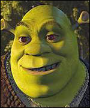

Blerdegerb

Local goblin who cannot cease cooking breakfast items at the detriment of the environment. Chickens fear him as he takes the eggs to cook into more breakfast foods.
Shrek
A layered ogre who lives in wetland property with custom furniture. Likes to relax and make candles in his spare time.
Jack Sparrow

A humble octopus man who works with his two friends to swindle spare change from children to feed his addition to hard candy.